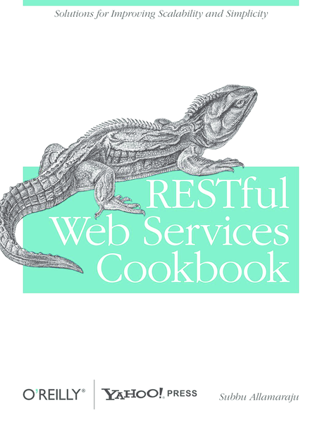

RESTful web services with Symfony2
Michał Pipa
17 January 2013
Michał Pipa
17 January 2013
Symfony2 is a reusable set of standalone, decoupled, and cohesive PHP components that solve common web development problems. Then, based on these components, Symfony2 is also a full-stack web framework.
Routing configuration
contact:
pattern: /contact
defaults: { _controller: AcmeDemoBundle:Main:contact }
requirements:
_method: GET
contact_process:
pattern: /contact
defaults: { _controller: AcmeDemoBundle:Main:contactProcess }
requirements:
_method: POST
HTTP method overriding
<form action="{{ path('blog_update', {'slug': blog.slug}) }}"
method="post">
<input type="hidden" name="_method" value="PUT" />
{{ form_widget(form) }}
<input type="submit" value="Update" />
</form>
<form action="{{ path('blog_delete', {'slug': blog.slug}) }}"
method="post">
<input type="hidden" name="_method" value="DELETE" />
{{ form_widget(form) }}
<input type="submit" value="Delete" />
</form>
users:
type: rest
resource: Acme\HelloBundle\Controller\UsersController
<?php
class UsersController
{
public function getUsersAction()
{} // "get_users" [GET] /users
public function postUsersAction()
{} // "post_users" [POST] /users
public function getUserAction($slug)
{} // "get_user" [GET] /users/{slug}
public function putUserAction($slug)
{} // "put_user" [PUT] /users/{slug}
public function deleteUserAction($slug)
{} // "delete_user" [DELETE] /users/{slug}
}
<?php
class UsersController
{
public function banUserAction($slug)
{} // "ban_user" [PATCH] /users/{slug}/ban
}
Hypermedia
as
the
Engine
of
Application
State
<?php
class UsersController
{
public function newUsersAction()
{} // "new_users" [GET] /users/new
public function editUserAction($slug)
{} // "edit_user" [GET] /users/{slug}/edit
public function deleteUserAction($slug)
{} // "delete_user" [DELETE] /users/{slug}
}
<?php
class UsersController
{
public function getUserCommentsAction($slug)
{} // "get_user_comments" [GET] /users/{slug}/comments
public function getUserCommentAction($slug, $id)
{} // "get_user_comment" [GET] /users/{slug}/comments/{id}
public function postUserCommentsAction($slug)
{} // "post_user_comments" [POST] /users/{slug}/comments
public function putUserCommentAction($slug, $id)
{} // "put_user_comment" [PUT] /users/{slug}/comments/{id}
}
<?php
use FOS\RestBundle\Controller\FOSRestController;
class UsersController extends FOSRestController
{
public function getUsersAction()
{
$data = // get data, in this case list of users.
$view = $this->view($data, 200)
->setTemplate('AcmeHelloBundle:Users:getUsers.html.twig')
->setTemplateVar('users')
;
return $this->handleView($view);
}
}
$serializer = $container->get('jms_serializer');
$serializer->serialize($data, $format);
$data = $serializer->deserialize($inputStr, $typeName, $format);
<?php
namespace MyNamespace;
use JMS\Serializer\Annotation\Type;
class BlogPost
{
/**
* @Type("ArrayCollection<MyNamespace\Comment>")
*/
private $comments;
/**
* @Type("string")
*/
private $title;
}
<?php
use Symfony\Component\HttpFoundation\Request;
use Symfony\Component\HttpFoundation\Response;
$app->get('/resource', function (Request $request) {
// ...
return new Response('...', 200);
});
$app->post('/resource', function (Request $request) {
// ...
return new Response('...', 201);
});
curl is a command line tool for transferring data with URL syntax
jq is a lightweight and flexible command-line JSON processor
Postman helps you be more efficient while working with APIs

